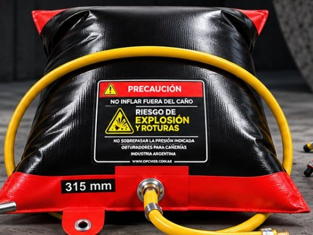

Obturadores vejiga
Una línea más de la familia de obturadores OPC.
Fabricamos obturadores tipo vejiga como parte de nuestra línea de productos para obturación de cañerías. Estamos completando la ficha técnica de esta línea.
Contenido en preparación. Vamos a sumar acá la descripción técnica, aplicaciones, modelos, diámetros y fotos de los obturadores vejiga. Mientras tanto, contactanos por WhatsApp y te asesoramos igual.

FOTO PENDIENTE
FOTO PENDIENTE
Aplicaciones
A completar.
Modelos y diámetros
A completar.
Asesoramiento
Consultanos por esta línea
Contanos tu aplicación y el diámetro de la cañería y te asesoramos sobre la solución de obturación más adecuada.
Hablar por WhatsApp